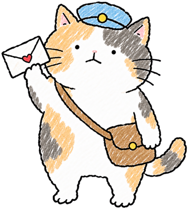

Support支援サポート지원
Answers to the usual questions, and a way to reach a human.常見問題的答案，和找得到真人的方法。よくある質問への答えと、人に連絡する方法。자주 묻는 질문에 대한 답과, 사람에게 연락하는 방법.
How it works
How do I earn stickers?
Every finished focus session drops a little shape into your jar. Reach your daily goal (set in minutes, in Me) and a cat drops in. Keep going and each further round of your goal earns another cat, up to three a day. Milestone cats arrive at 1, 7, 30, 50, 100, 200 and 365 cats.
What are paw coins?
You get one coin for every 25 minutes of focus in a day, plus one for the first session of the day. Tap Collect in the Shop once a day for one more (five with Plus). Coins buy copies of stickers you have already earned, for your Book. The jar only ever holds what you earned by focusing.
What does Plus include?
Seasonal stickers, three more companion cats, more jar looks, ambient sounds while you focus, extra paper for the Book, and five coins a day instead of one. Your daily sticker and the whole core loop are free forever.
Can I change the focus length or my goal?
Yes. Tap − or + beside the time on Today (5 to 90 minutes), or set everything in Me. A goal change applies from tomorrow if today already has focus time.
Purchases
I bought Plus but it isn't active
Open Me › Mochidoro Plus and tap Restore purchases. Make sure you are signed in to the same Apple Account you bought with. If a family member has to approve the purchase (Ask to Buy), Plus turns on by itself once approved.
How do I cancel the subscription?
Subscriptions are managed by Apple: open Settings › Apple Account › Subscriptions › Mochidoro, or ask for a refund at reportaproblem.apple.com. Cancelling keeps Plus until the end of the paid period.
Coins I bought didn't arrive
Reopen the app once; packs are credited as soon as the App Store confirms them. If they still don't show after a day, contact us with the order number from your Apple receipt.
Devices and sync
iCloud sync between my iPhone and iPad
Turn on iCloud for Mochidoro in Settings › Apple Account › iCloud › Saved to iCloud on every device. Sync runs in the background and can take a few minutes the first time. Nothing is stored on our servers; it is your private iCloud.
Notifications don't arrive
Check Settings › Notifications › Mochidoro is allowed. Focus modes can hide them; Mochidoro marks timer notifications as time-sensitive so they get through when your Focus allows time-sensitive ones.
Widgets and Apple Watch
Add the widgets from the widget gallery (long-press the Home Screen › +). Visit your jar once so the widget has a picture. The Watch app mirrors your timer; open Mochidoro on your iPhone once after installing it.
The jar doesn't move when I tilt the phone
The jar uses the motion sensor. It doesn't work in the Simulator or on devices without one; you can still tap stickers. In Low Power Mode it runs at a gentler frame rate.
Your data
How do I delete everything?
Delete the app. If iCloud sync was on, also remove Mochidoro's data in Settings › Apple Account › iCloud › Manage Storage. See the privacy policy: we hold nothing of yours.
Contact
Reach a human
Email: —
Found a bug or have an idea? Open an issue on GitHub. Please include your iPhone model and iOS version.
Terms: purchases are governed by Apple's standard EULA.
怎麼玩
貼紙怎麼拿？
每完成一次專注，就有一個小圖形掉進罐子。達成每日目標（在「我」設定，以分鐘計）就會掉一隻貓；繼續專注，每再滿一輪目標再掉一隻，一天最多三隻。集到 1、7、30、50、100、200、365 隻貓時會有里程碑貓。
貓掌幣是什麼？
一天內每專注滿 25 分鐘得 1 枚，當天第一次專注另外加 1 枚。商店每天可以按一次「領取」再拿 1 枚（Plus 拿 5 枚）。幣可以買你已經拿過的貼紙副本，貼在手帳裡。罐子裡永遠只有你靠專注拿到的貼紙。
Plus 有什麼？
季節貼紙、多三隻陪伴貓、更多罐子外觀、專注時的環境音、手帳的更多紙張，以及每天 5 枚幣（免費是 1 枚）。每日貼紙和整個核心玩法永遠免費。
可以改專注時間或目標嗎？
可以。在「今天」畫面按時間旁邊的 − 和 +（5 到 90 分鐘），或到「我」裡設定。今天已經有專注時間的話，新的目標從明天開始算。
購買
我買了 Plus 但沒生效
到「我 › Mochidoro Plus」按還原購買。請確認登入的是購買時的 Apple 帳號。如果是需要家人核准的購買（詢問購買），核准後 Plus 會自動開啟。
怎麼取消訂閱？
訂閱由 Apple 管理：到「設定 › Apple 帳號 › 訂閱項目 › Mochidoro」，或到 reportaproblem.apple.com 申請退款。取消後 Plus 會保留到已付費期間結束。
買的幣沒有到帳
重新打開 App 一次；App Store 確認後幣就會入帳。一天後還是沒有的話，請附上 Apple 收據上的訂單編號聯絡我們。
裝置與同步
iPhone 和 iPad 之間的 iCloud 同步
在每一台裝置的「設定 › Apple 帳號 › iCloud › 儲存到 iCloud」裡開啟 Mochidoro。同步在背景進行，第一次可能要幾分鐘。資料不會存在我們的伺服器，是你自己的 iCloud。
收不到通知
確認「設定 › 通知 › Mochidoro」有允許。專注模式可能會擋掉通知；Mochidoro 的計時通知標記為「時效性」，只要你的專注模式允許時效性通知就會送達。
小工具和 Apple Watch
長按主畫面 › + 從小工具庫加入。先去看一次罐子，小工具才有圖。Watch App 會同步你的計時器；裝好後先在 iPhone 打開一次 Mochidoro。
傾斜手機罐子不會動
罐子用的是動作感測器，模擬器或沒有感測器的裝置上不會動，但還是可以點貼紙。低耗電模式下會用比較溫和的更新頻率。
你的資料
怎麼刪掉所有資料？
刪除 App 即可。如果有開 iCloud 同步，請另外到「設定 › Apple 帳號 › iCloud › 管理儲存空間」移除 Mochidoro 的資料。詳見隱私權政策：我們沒有留存你的任何東西。
聯絡
使い方
ステッカーはどうやって手に入る？
集中セッションを終えるたびに、小さな形が瓶に落ちます。1 日の目標（「わたし」で分単位で設定）に達すると猫が 1 匹落ちてきます。さらに続けると、目標をもう一周するごとにもう 1 匹、1 日最大 3 匹まで。猫が 1、7、30、50、100、200、365 匹になるとマイルストーン猫がもらえます。
肉球コインとは？
1 日の集中 25 分ごとに 1 枚、その日最初のセッションでさらに 1 枚。ショップで 1 日 1 回「受け取る」をタップするともう 1 枚（Plus なら 5 枚）。コインで、すでに手に入れたステッカーの複製を買ってブックに貼れます。瓶には集中して得たものだけが入ります。
Plus には何が含まれる？
季節のステッカー、相棒猫が 3 匹追加、瓶の見た目、集中中の環境音、ブックの紙の追加、そして 1 日 1 枚の代わりに 5 枚のコイン。毎日のステッカーと基本の遊びはずっと無料です。
集中時間や目標は変えられる？
はい。「今日」画面で時間の横の − と +（5〜90 分）、または「わたし」で設定できます。今日すでに集中時間がある場合、新しい目標は明日から適用されます。
購入
Plus を買ったのに有効にならない
「わたし › Mochidoro Plus」で購入を復元をタップしてください。購入時と同じ Apple アカウントでサインインしているか確認を。家族の承認が必要な購入（承認と購入のリクエスト）は、承認されると Plus が自動でオンになります。
サブスクリプションの解約方法
サブスクリプションは Apple が管理しています。「設定 › Apple アカウント › サブスクリプション › Mochidoro」から、返金は reportaproblem.apple.com から。解約しても支払い済みの期間が終わるまで Plus は使えます。
買ったコインが届かない
アプリを一度開き直してください。App Store の確認が済み次第、加算されます。1 日たっても届かない場合は、Apple の領収書にある注文番号を添えてご連絡ください。
端末と同期
iPhone と iPad の iCloud 同期
各端末の「設定 › Apple アカウント › iCloud › iCloud に保存」で Mochidoro をオンにしてください。同期はバックグラウンドで行われ、初回は数分かかることがあります。私たちのサーバーには何も保存されません。あなた自身の iCloud です。
通知が届かない
「設定 › 通知 › Mochidoro」が許可されているか確認してください。集中モードで隠れることがあります。Mochidoro のタイマー通知は「時間的制約あり」として送るので、集中モードがそれを許可していれば届きます。
ウィジェットと Apple Watch
ホーム画面を長押し › + のウィジェットギャラリーから追加してください。瓶を一度開くとウィジェットに画像が出ます。Watch アプリはタイマーを映します。インストール後、iPhone で Mochidoro を一度開いてください。
端末を傾けても瓶が動かない
瓶はモーションセンサーを使います。シミュレータやセンサーのない端末では動きませんが、ステッカーのタップはできます。低電力モードでは控えめなフレームレートになります。
あなたのデータ
すべて削除するには？
アプリを削除してください。iCloud 同期をオンにしていた場合は、「設定 › Apple アカウント › iCloud › ストレージを管理」からも Mochidoro のデータを削除してください。プライバシーポリシーのとおり、私たちはあなたのデータを持っていません。
連絡先
人に連絡する
メール：—
バグやアイデアは GitHub で issue を作ってください。iPhone の機種と iOS のバージョンを添えていただけると助かります。
規約：購入には Apple の標準 EULA が適用されます。
이렇게 놀아요
스티커는 어떻게 얻나요?
집중 세션을 마칠 때마다 작은 모양 하나가 병에 떨어져요. 하루 목표(「나」에서 분 단위로 설정)를 달성하면 고양이 한 마리가 떨어지고, 계속하면 목표 한 바퀴마다 한 마리씩, 하루 최대 세 마리까지. 고양이가 1, 7, 30, 50, 100, 200, 365마리가 되면 기념 고양이가 와요.
발바닥 코인이 뭔가요?
하루에 집중 25분마다 1개, 그날 첫 세션에 1개 더. 상점에서 하루 한 번 「받기」를 누르면 1개 더(Plus는 5개). 코인으로는 이미 얻은 스티커의 복제본을 사서 북에 붙일 수 있어요. 병에는 집중해서 얻은 것만 들어갑니다.
Plus에는 무엇이 있나요?
계절 스티커, 동반 고양이 3마리 추가, 병 모양 추가, 집중 중 환경음, 북의 종이 추가, 그리고 하루 1개 대신 5개의 코인. 매일의 스티커와 기본 놀이는 영원히 무료예요.
집중 시간이나 목표를 바꿀 수 있나요?
네. 「오늘」 화면에서 시간 옆의 −와 +(5~90분)를 누르거나 「나」에서 설정하세요. 오늘 이미 집중 시간이 있으면 새 목표는 내일부터 적용됩니다.
구매
Plus를 샀는데 켜지지 않아요
「나 › Mochidoro Plus」에서 구매 복원을 누르세요. 구매할 때 쓴 Apple 계정으로 로그인되어 있는지 확인해 주세요. 가족 승인이 필요한 구매(구입 요청)라면 승인 후 Plus가 저절로 켜져요.
구독은 어떻게 취소하나요?
구독은 Apple이 관리해요. 「설정 › Apple 계정 › 구독 › Mochidoro」에서 취소하거나 reportaproblem.apple.com에서 환불을 요청하세요. 취소해도 결제한 기간이 끝날 때까지 Plus를 쓸 수 있어요.
산 코인이 들어오지 않아요
앱을 한 번 다시 열어 주세요. App Store가 확인하는 대로 들어옵니다. 하루가 지나도 없다면 Apple 영수증의 주문 번호와 함께 연락해 주세요.
기기와 동기화
iPhone과 iPad 사이 iCloud 동기화
모든 기기에서 「설정 › Apple 계정 › iCloud › iCloud에 저장」의 Mochidoro를 켜 주세요. 동기화는 백그라운드에서 진행되고 처음엔 몇 분 걸릴 수 있어요. 우리 서버에는 아무것도 저장되지 않는, 나만의 iCloud예요.
알림이 오지 않아요
「설정 › 알림 › Mochidoro」가 허용되어 있는지 확인하세요. 집중 모드가 알림을 가릴 수 있어요. Mochidoro의 타이머 알림은 「시간에 민감한 알림」으로 보내므로, 집중 모드에서 이를 허용하면 도착합니다.
위젯과 Apple Watch
홈 화면을 길게 누르고 › +에서 위젯을 추가하세요. 병을 한 번 열어야 위젯에 그림이 나와요. Watch 앱은 타이머를 그대로 보여줍니다. 설치 후 iPhone에서 Mochidoro를 한 번 열어 주세요.
휴대폰을 기울여도 병이 움직이지 않아요
병은 모션 센서를 써요. 시뮬레이터나 센서가 없는 기기에서는 움직이지 않지만 스티커는 탭할 수 있어요. 저전력 모드에서는 더 부드러운 프레임 속도로 동작합니다.
내 데이터
전부 지우려면?
앱을 삭제하세요. iCloud 동기화를 켰었다면 「설정 › Apple 계정 › iCloud › 저장 공간 관리」에서도 Mochidoro 데이터를 지워 주세요. 개인정보 처리방침처럼, 우리는 당신의 데이터를 가지고 있지 않아요.
문의
사람에게 연락하기
이메일: —
버그나 아이디어가 있다면 GitHub에 이슈를 남겨 주세요. iPhone 모델과 iOS 버전을 함께 적어 주시면 좋아요.
약관: 구매에는 Apple의 표준 EULA가 적용됩니다.